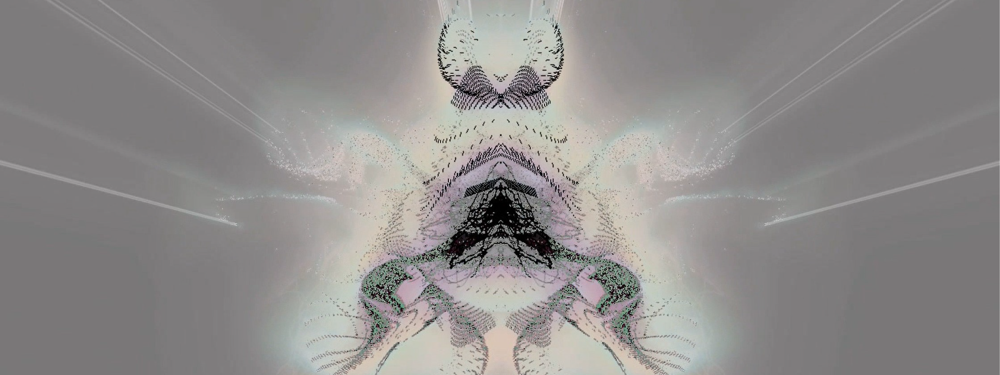
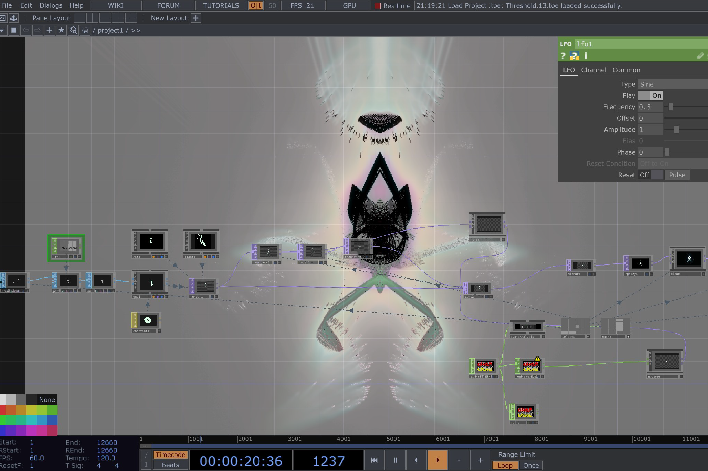

Threshold: Audio-reactive Visualizer
Role
- Sound designer
- Motion designer
Project Type
- Audiovisual
Tools Used
- TouchDesigner
- Omnisphere
- FL Studio
Threshold is a project that seeks to explore art in technology. The goal was to produce original music and abstract motion visuals that are audio-reactive for synchronicity with the composed track. The piece follows the theme of dissociation, a disconnection from an individual's experiences and self. It is an abstract commentary on the tendency to live our lives on autopilot, desensitized to the world around us as an involuntary form of self protection.
My approach to this project was to learn a node-based software that I had never explored prior: TouchDesigner. Before diving into software, I created a moodboard to compile visual references which captured the tone. I came up with a handful of music composition demos on piano before I moved to FL Studio to produce, mix, and master the track. I then watched tutorials, browsed forums, and attended a workshop to learn the basics of TouchDesigner.
After running several test projects, I began designing the motion visuals which were inspired by Rorschach (ink blot) tests as reference to concepts of psychology and the hypnotic feel of the piece. I later set up interactivity to make the graphics react to certain frequencies within the track. This project gave me the opportunity to learn a fascinating and limitless software tool which I can continue to use for motion, sound, and more.

You May Like


I don't bite.
Feel free to reach out for any inquiries or just to chat (I'd love to exchange music recs).
Let's connect!
estrellaflagg.design@gmail.comEstrella Flagg ©2026